Open a comparison for full-resolution pixels. See the capture notes for remaining differences.
5.252% of pixels exceed a maximum RGB-channel delta of 12.
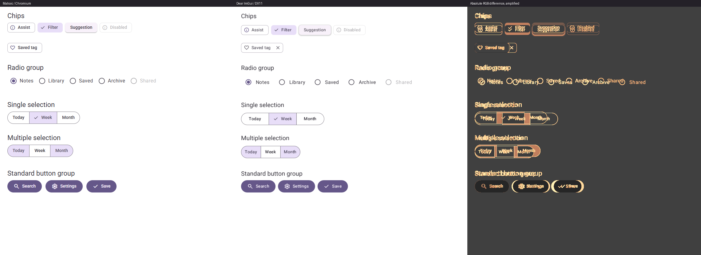
5.289% of pixels exceed a maximum RGB-channel delta of 12.
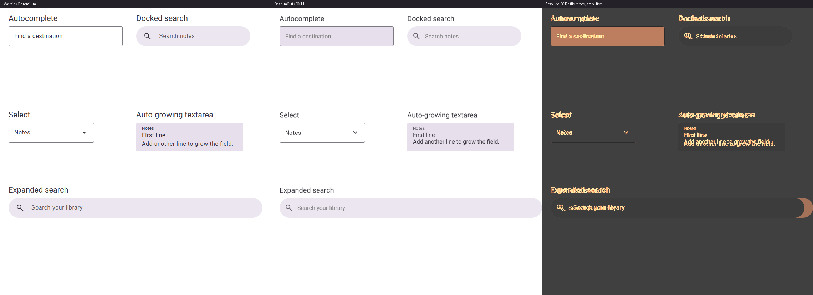
14.889% of pixels exceed a maximum RGB-channel delta of 12.
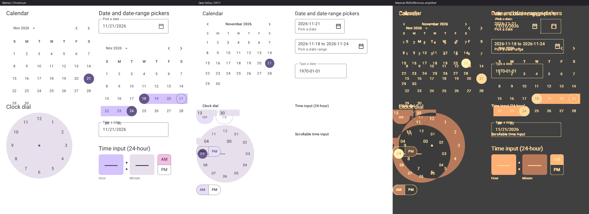
11.640% of pixels exceed a maximum RGB-channel delta of 12.
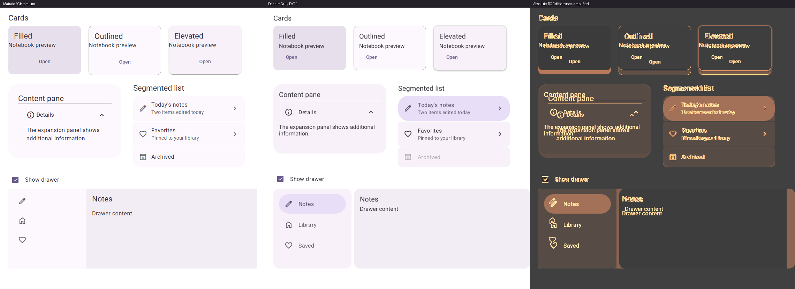
7.170% of pixels exceed a maximum RGB-channel delta of 12.
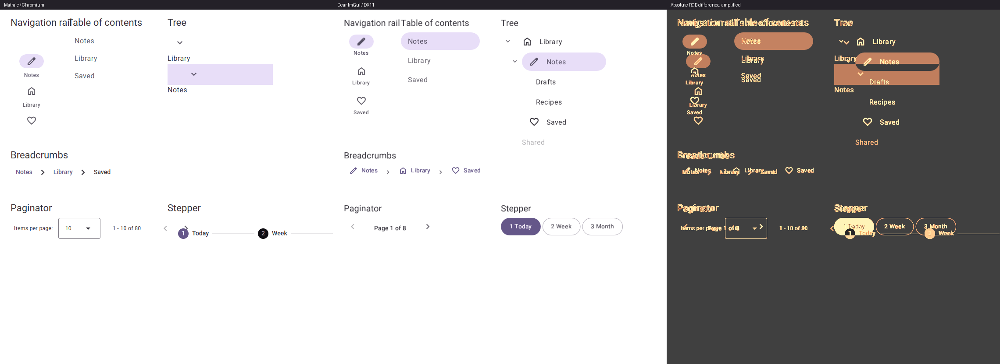
11.270% of pixels exceed a maximum RGB-channel delta of 12.
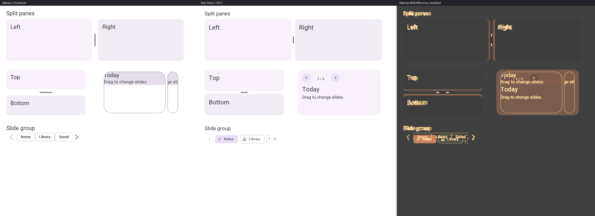
7.137% of pixels exceed a maximum RGB-channel delta of 12.
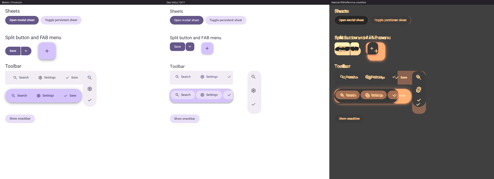
6.494% of pixels exceed a maximum RGB-channel delta of 12.
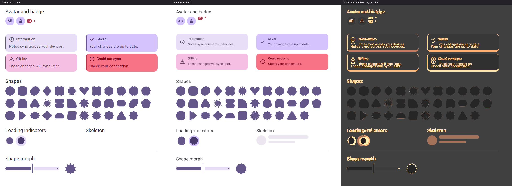
5.247% of pixels exceed a maximum RGB-channel delta of 12.
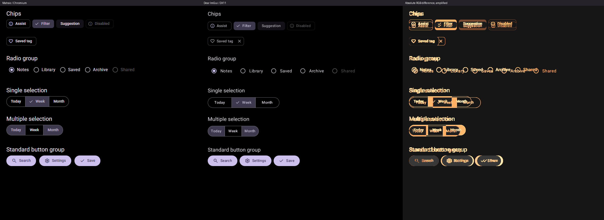
5.324% of pixels exceed a maximum RGB-channel delta of 12.
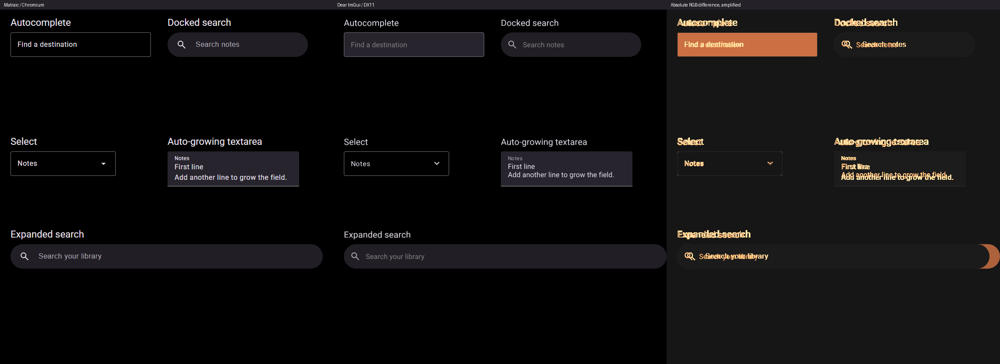
15.304% of pixels exceed a maximum RGB-channel delta of 12.
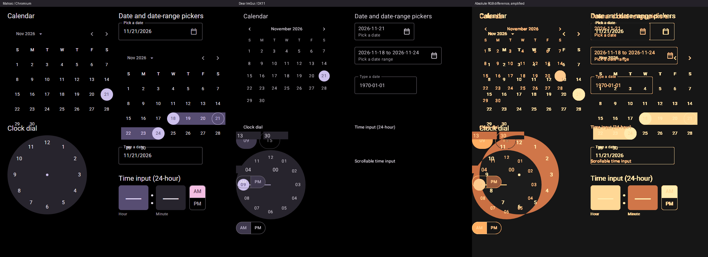
12.762% of pixels exceed a maximum RGB-channel delta of 12.
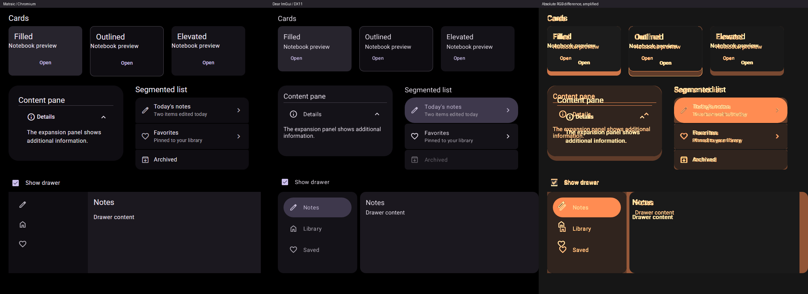
7.238% of pixels exceed a maximum RGB-channel delta of 12.
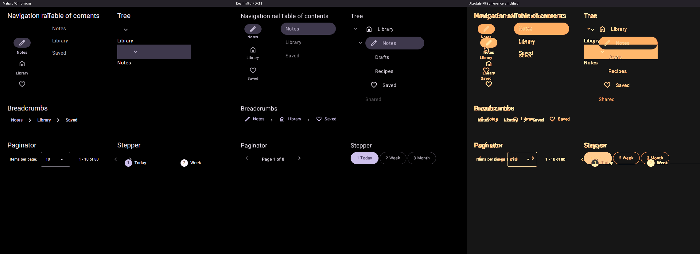
11.503% of pixels exceed a maximum RGB-channel delta of 12.
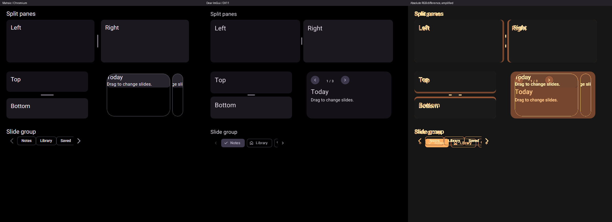
6.556% of pixels exceed a maximum RGB-channel delta of 12.
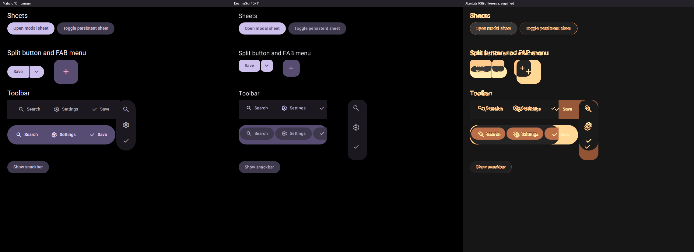
6.673% of pixels exceed a maximum RGB-channel delta of 12.
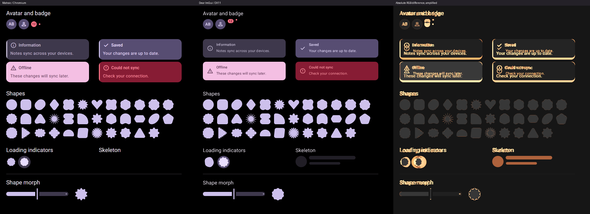